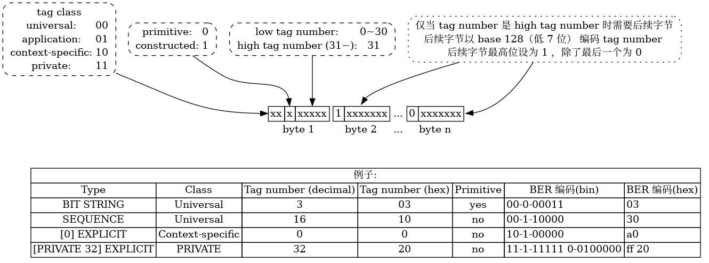
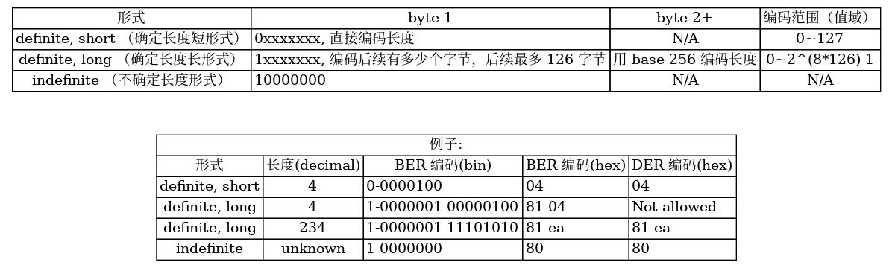

记法和编码
ASN.1（Abstract
syntax notation one）
是一个对数据（类型/值）的记法和编码的祖父级标准；制定几十年而依然健在且广泛使用。
对比一下 JSON（Javascript Object Notation），JSON 中的记法和编码是等价的，即它的记法就是编码。
而 ASN.1 中记法和编码是不一样的，记法主要是为人类服务，用于描述，是抽象且实现无关的，例如 （摘自这里）：
AirlineFlight ::= SEQUENCE {
airline IA5String,
flight NumericString,
seats SEQUENCE {
maximum INTEGER,
occupied INTEGER,
vacant INTEGER
},
airport SEQUENCE {
origin IA5String,
stop1 [0] IA5String OPTIONAL,
stop2 [1] IA5String OPTIONAL,
destination IA5String
},
crewsize ENUMERATED {
six (6),
eight (8),
ten (10)
},
cancel BOOLEAN DEFAULT FALSE
}.而编码则是具体实现序列化以及反序列化的操作，ASN.1 有很多种编码方式，例如：
- Basic Encoding Rule (BER)
- Canonical Encoding Rules (CER)
- Distinguished Encoding Rules (DER)
- XML Encoding Rules (XER)
- Packed Encoding Rules (PER)
- …
这篇笔记主要记录 ASN.1 记法以及 BER/DER 这两种常用编码。
类型/Tag
ASN.1 中数据是有类型的，不同类型的数据有不同的值域，类型按特点用途可以划分成以下四种：
- simple type，“原子”类型，例如 BOOLEAN，INTEGER 等本身不可分解的基本类型
- structured type，由其它类型组装而成的类型，包括 SEQUENCE，SEQUENCE OF，SET，SET OF，类似于一些计算机语言中的 struct, array, set 等
- tagged type，类似于类型别名，用于包装一个已有的类型；这在一些有歧义的场合下可作区分用
- other type，包括 CHOICE 和 ANY
每一种类型（除 CHOICE 和 ANY 外）都可以由一个 tag := (class, tag number)
来唯一标识（所以以下 “tag” 和 “类型” 这两个词基本等价混用），其中类别
class，相当于命名空间；非负整数
tag number，相当于在此命名空间中的类型编号；有四种类别：
- universal，内建类别，这一类别的 tag
对所有应用来说都表示相同的类型，貌似大部分（还是全部？）的
simple/structured 类型都定义在这个类别中，由 X.208
所定义，以下是一些例子：
End-of-Content: tag number 为 0，这是个特殊的类型，用于标识不确定长度数据的结束，下面再详叙BOOLEAN: tag number 为 1，布尔类型INTEGER: tag number 为 2，任意精度的整数BIT STRING: tag number 为 3，任意长度的比特串OCTET STRING: tag number 为 4，任意长度的字节串NULL: tag number 为 5OBJECT IDENTIFIER(OID): tag number 为 6，对象标识符，用于为各种“东西”/“概念”起一个唯一的标识符，由机构 ITU 和 ISO/IEC 标准化；其具体形式类似于域名的多级树状结构，子级对象从属于父对象，只是每一级由一个整数表示，例如：- 1 表示的是 iso
- 1.2 member-body，ISO member bodies
- 1.2.840 us，美国
- 1.2.840.113549 rsadsi，即 RSA Security LLC 公司
- 1.2.840.113549.1 pkcs，即 RSA 公司制定的 Public-Key Cryptography Standards (PKCS) 系列标准
- 1.2.840.113549.1.1 pkcs-1，即 PKCS#1 标准
- 1.2.840.113549.1.1.13 sha512WithRSAEncryption
UTF8 STRING: tag number 为 12SEQUENCE 和 SEQUENCE OF: tag number 为 16，有序的结构体和列表（不明白为什么不区分两个 tag 呢？）SET 和 SET OF: tag number 为 17，无序的结构体和列表（继续不明白为什么不区分两个 tag）PrintableString: tag number 为 19（有了OCTET STRING为什么还要区分这个呢？）IA5String: tag number 为 22，大致等价于 ASCII 字符串UTCTIME: tag number 为 23
- application，这一类别的 tag 的意义由某应用内定义，对不同的应用来说，即使相同的 tag number 对应的是不同的含义
- private，这一类别的 tag 的意义由某企业或组织定义
- context-specific，这一类别的 tag 主要用于在特定的上下文中里解决歧义问题，例如某个 SEQUENCE 类型里面包含了两个相邻的可缺省的 INTEGER 字段，假如编码过后只传来一个整数（另外一个取缺省值），那究竟这个值是属于哪个字段呢？这时候就需要给这两个字段封装成新的 tagged 类型加以区分
BER (Basic Encoding Rules) 简介
BER 对数据的编码一般由以下三（或四）个部件按顺序构成，常简称 TLV (Type-Length-Value)：
- Identifier octets（T）：用于编码这个数据的类型/tag
- Length octets（L）：用于编码数据的长度
- Contents octets（V）：实际数据的编码，长度可以为 0
- End-of-contents octets（optional）：有些数据在编码时还不知道具体长度，例如流数据，这个时候需要有一个结束标志
Identifier octets 对类型的编码使用 1+ 个字节，第一个字节编码包括 tag class，primitive 标识位（注意：这个标识位是用来标识数据编码时的方法，跟上边所说的 simple/structured/… 类型分类没有太大关系）， 以及 tag number ：小于等于 30 的 tag number 直接编码在第一个字节；对于更大的 tag number，第一字节低 5 位写死 31，并用后续字节的低 7 位编码实际 tag number，后续字节的最高位设为 1，除了最后一个设为 0 用以标识结束；整理图示如下：

Length octets 对实际数据的长度进行编码，有三种形式：
- 确定长度短形式，可编码 \([0, 127]\)，仅需要一个字节编码
- 确定长度长形式，可编码 \([0, 2^{8 \times 126}-1]\)，需要 2 到127个字节编码
- 不确定长度形式，用于在编码阶段无法确定长度的数据
具体方法整理如下图：

Content octets 不同类型的数据编码方式各异，见下面分述
End-of-Content octets
对于不确定长度的复合类型数据，在最后需要有一个结束标识 00 00 （两个值为 0
的字节），这其实就是一个 End-of-Content 类型的数据的 BER
编码：因为它是 universal 中 tag number 为 0 的，且它没有数据，所以
length-octets 为 0
DER (Distinguished Encoding Rules) 简介
DER 其实是 BER 的一个严格子集（即任意 DER 编码的数据都是合法的 BER 编码，但反之则未必），它要求对数据只能有唯一一种编码方式，这样做的原因是例如在创建数字签名的时候，同一份数据假如用 BER 里不同的编码方式（例如长度可以用长模式或短模式），那么会产生不一样的签名结果。
wiki 上列出一些最显著的一些限制规则，如：
- 只能使用确定形式来编码长度，且必须使用最短的编码形式（如长度若小于等于 127，则必须使用短形式）
- 各种 string 类型必须使用 primitive 的编码方式
- SET 类型（无序结构体）里的字段需要按照 tag 值的大小排序进行编码（排序了就唯一了）
一些类型的记法及编码方式
以下基本翻译自：http://luca.ntop.org/Teaching/Appunti/asn1.html 第五节
INTEGER
tag number 为 2，整数类型可以是正/负的任意精度整数。 记法：
INTEGER [ '{' identifier1(value1) ... identifiern(valuen) '}' ]其中 identifier1 … identifiern
如果有的话，这些标识符将绑定其对应的整数值，例如：
Version ::= INTEGER { v1988(0) }
...
Certificate ::= ...
version Version DEFAULT v1988,
...这是 X.509 里头的版本类型，定义了 v1988 这个标识符，其值为
0；证书类型里头的版本默认即为这个值。
BER 编码是 primitive 方式，使用补码 来编码此整数，如：
- 0:
02 01 00 - 127:
02 01 7f - 128:
02 02 00 80 - -128:
02 01 80
BIT STRING
tag number 为 3，比特串可以表示任意长度（包括0）的 0 和 1。记法：
BIT STRING例如 X.509 的 SubjectPublicKeyInfo：
SubjectPublicKeyInfo ::= SEQUENCE {
algorithm AlgorithmIdentifier,
publicKey BIT STRING
}BER 编码方式可以是 primitive 或者 constructed 的，DER 只允许 primitive 编码方式：
- primitive 编码方式：由于 bit string 可以是任意长度，不一定是 8 的整数倍，所以第一字节编码最后一个字节中填充的比特数（0～7），BER 填充比特可以是任意东西，但 DER 则只允许填充 0
- constructed 编码方式：这种编码方式把原来的一个 BIT STRING 分解成多个字串，分别编码之并串联起来；字串中除了最后一个，长度都必须是 8 的整数倍
例如对 011011100101110111
进行编码（长度为 18，01101110-01011101-11 (bin) 6e 5d c0 (hex)，填充 6 位）：
- DER 编码：
03 04 06 6e 5d c0 - BER constructed 方式编码：把原比特串划分成
01101110-01011101和11分别编码得03 03 00 6e 5d和03 02 06 c0，这两子串一共 9 字节，故最终编码为：23 09 03 03 00 6e 5d 03 02 06 c0。（注意：第一个字节变成了 23，这是因为 primitive 标识位为 1）
OCTET STRING
tag number 为 4，任意长度的字节串，记法：
OCTET STRING [ SIZE '(' size | size1 '..' size2 ')' ]SIZE(size)
形式的表示字节串长度为 size，SIZE(size1..size2)
形式的表示字符串长度需要在 size1 和 size2 之间，没有 SIZE
后缀的表示字符串可以任意长度。
BER 编码方式可以是 primitive 或者 constructed 的，constructed 编码方式类似 BIT STRING 一样由子串串联而成；DER 只允许 primitive 编码方式
SEQUENCE
tag number 为 16，相当于 c 语言中的 struct，记法：
SEQUENCE {
[identifier1] Type1 [ '{' ( 'OPTIONAL' | 'DEFAULT' value1 ) '}' ],
...,
[identifiern] Typen [ '{' ( 'OPTIONAL' | 'DEFAULT' valuen ) '}' ]
}identifierx
是字段名，主要起到名称作用所以可以不写；Typex 则是对应字段的类型；字段如果带上
OPTIONAL
表明此字段可以为空，如果带上 DEFAULT valuex
同样表明此字段可以为空且有缺省值；相邻几个字段如果都是 OPTIONAL 或者 DEFAULT
的话，那么这几个字段以及后续的那个字段必须拥有不同的 tag 以避免歧义
编码方式为 structured，字段按顺序编码串联而成；当某个字段空时，不用编码这个字段；假如刚好这个字段的值跟缺省值相同时，BER 编码可以也可以不包含此字段，DER 编码则不包含此字段
例子，摘自 wiki：
FooQuestion ::= SEQUENCE {
trackingNumber INTEGER,
question IA5String
}
myQuestion FooQuestion ::= {
trackingNumber 5,
question "Anybody there?"
}编码为
30 — type tag indicating SEQUENCE
13 — length in octets of value that follows
02 — type tag indicating INTEGER
01 — length in octets of value that follows
05 — value (5)
16 — type tag indicating IA5String
(IA5 means the full 7-bit ISO 646 set, including variants,
but is generally US-ASCII)
0e — length in octets of value that follows
41 6e 79 62 6f 64 79 20 74 68 65 72 65 3f — value ("Anybody there?")SEQUENCE OF
相当于 c 中的 array，列表中的数据都是同一个类型的，编码方式跟 SEQUENCE 是一样的，只是记法不一样：
SEQUENCE OF TypeSET
tag number 是 17，字段无序的结构体，记法类似于 SEQUENCE，编码方式也类似于它，另有一个要求是字段必须有不一样的 tag number，DER 编码时字段按 tag number 排序
SET OF
类似于 SEQUENCE OF，只是是无序的，DER 编码时按照各个字段 BER 编码后的字串排序
Tagged types
tagged types 如前所述是对现有类型的封装，赋予新的 tag
成为新的类型。有两种 tagged 类形：IMPLICIT 和 EXPLICIT，只是编码方式不一样，记法如下：
'[' [ class ] number ']' [ 'IMPLICIT' | 'EXPLICIT' ] Type
class = 'UNIVERSAL' | 'APPLICATION' | 'PRIVATE'例如：
Image ::= SEQUENCE {
width [0] INTEGER OPTIONAL,
height [1] INTEGER OPTIONAL,
data OCTET STRING
}
myImage Image ::= {
width 100,
...
}这里 width 字段的原类型是
INTEGER OPTIONAL，[0] 表明这个 tagged 类型的 tag number
为 0，又因为 class 没指定，默认为 context-specific，而由于也没有指定
IMPLICIT 还是 EXPLICIT，默认是 EXPLICIT
编码方式，对于 EXPLICIT tagged 类型，采用 constructed 编码方式，就像
SEQUENCE 一样，原类型数据则作为唯一一个字段进行编码。如上述例子对 width
的编码为：a0 (10-1-00000) 03 02 01 64
对于 IMPLICIT tagged 类型的话，则只是把原类型数据的 tag 换成新的 tag，所以可能是 primitive 也可以能是 constructed 编码方式，length-octets 跟 content-octets 都不变
对比两种 tagged 类型，EXPLICIT 更为完整，接收方可以立即解码出原类型数据；而 IMPLICIT 类型的编码更短，但接收方必须知道原类型才能解码出数据